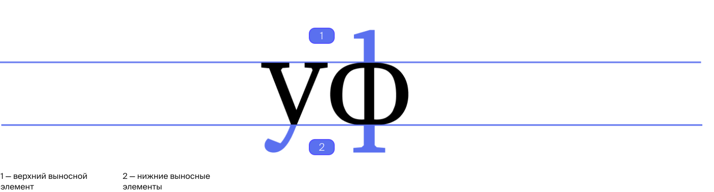
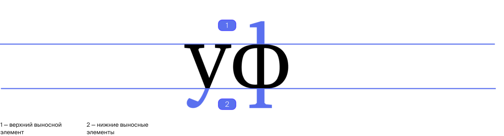

Понимание анатомии шрифта
лежит в основе работы с типографикой,
поэтому мы подготовили подробный
гайд, рассказывающий о букве
лежит в основе работы с типографикой,
поэтому мы подготовили подробный
гайд, рассказывающий о букве
«Всмотритесь в букву, и вы разглядите индивидуальность в её физических
свойствах: лёгкая или массивная, круглая
или квадратная, тонкая или приземистая»
свойствах: лёгкая или массивная, круглая
или квадратная, тонкая или приземистая»
Разбор анатомии
буквы начинается с рассмотрения того,
как текст позиционируется
в пространстве, то есть с его внешних
свойств.
буквы начинается с рассмотрения того,
как текст позиционируется
в пространстве, то есть с его внешних
свойств.


 

Необходимо
также учитывать внутрибуквенный
просвет. Это внутренняя часть знака,
область, частично или полностью
находящееся между его линиями.
также учитывать внутрибуквенный
просвет. Это внутренняя часть знака,
область, частично или полностью
находящееся между его линиями.
Внутрибуквенный просвет бывает
открытым или закрытым. Степень
открытости может определяться
конструкцией знака или особенностями
гарнитуры.
открытым или закрытым. Степень
открытости может определяться
конструкцией знака или особенностями
гарнитуры.
Классификация шрифта и его
характер зависият от особенностей его
внутренних элементов. Рассмотрим
их подробнее.
характер зависият от особенностей его
внутренних элементов. Рассмотрим
их подробнее.
Выбор шрифта
Расскажем о базовых принципах работы
с типографикой